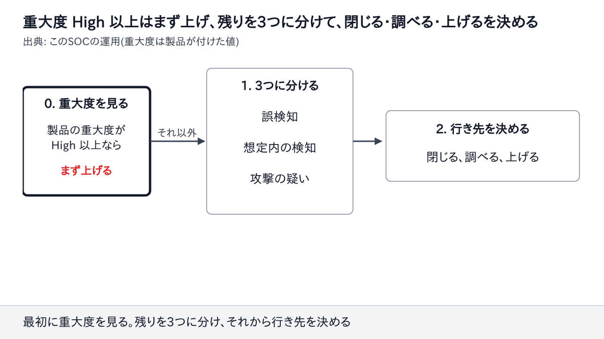
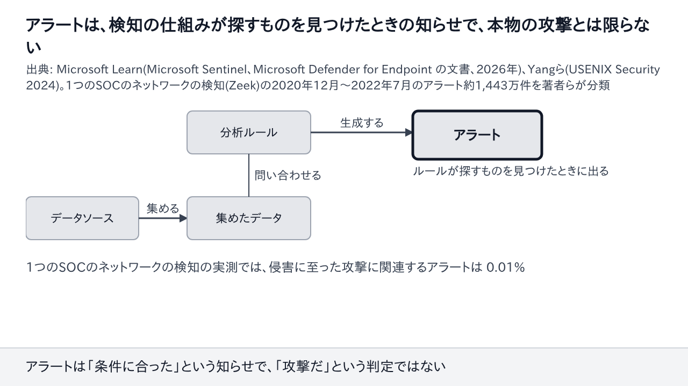
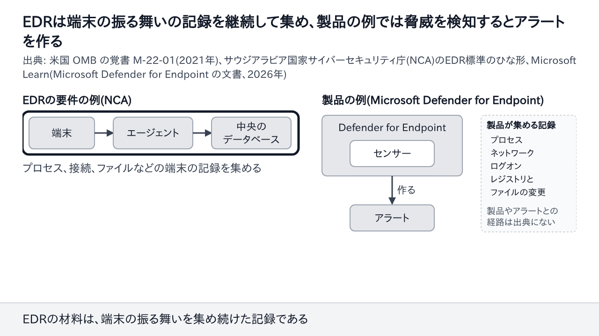
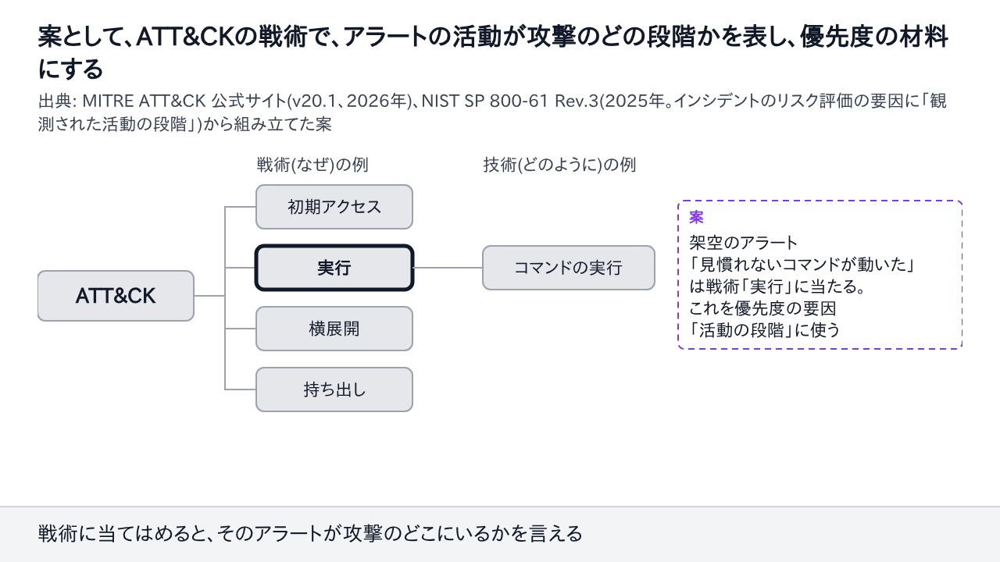
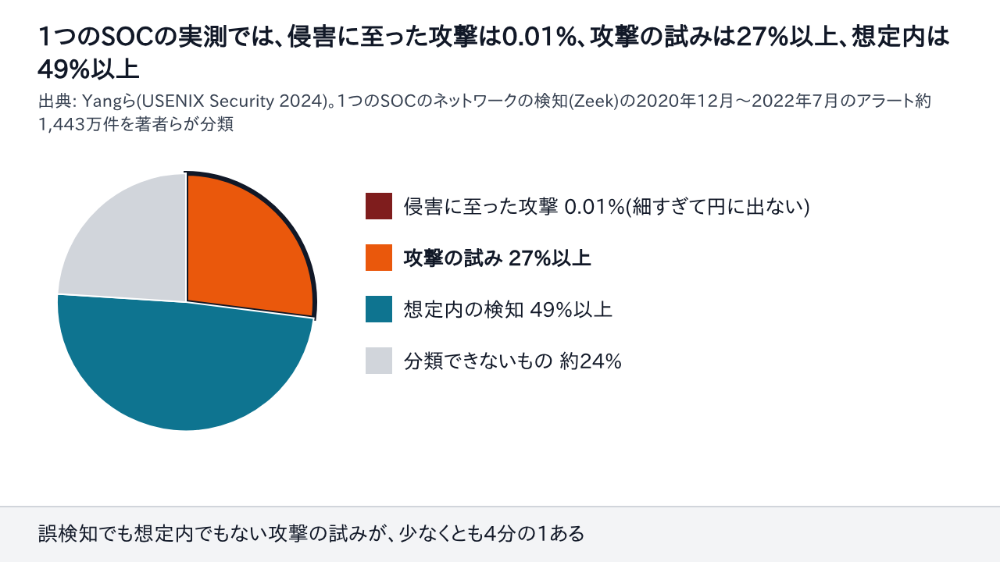
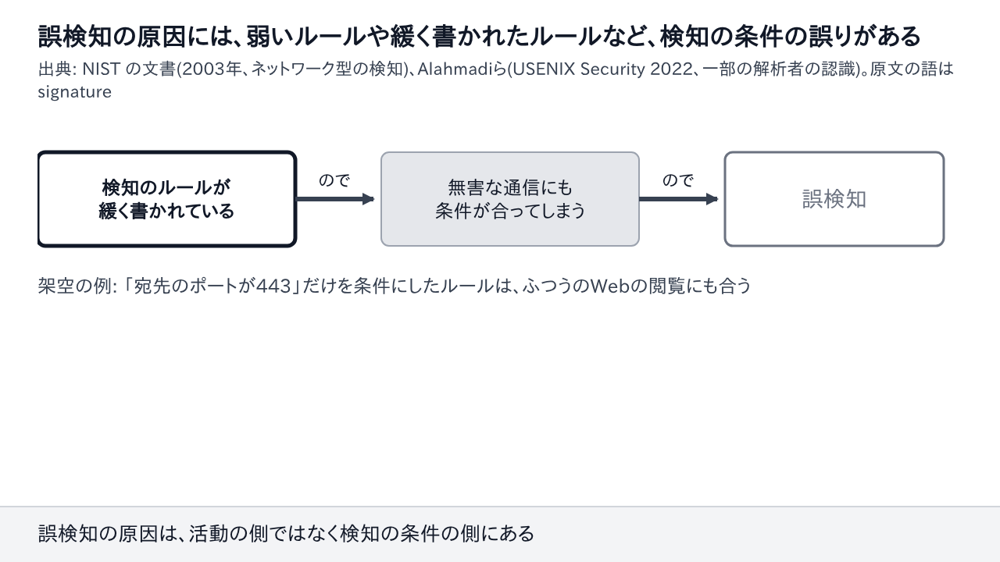
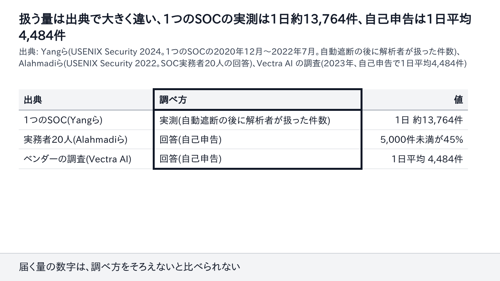
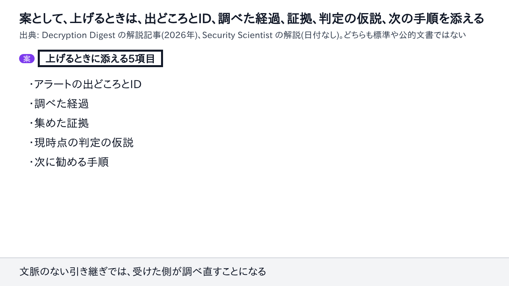
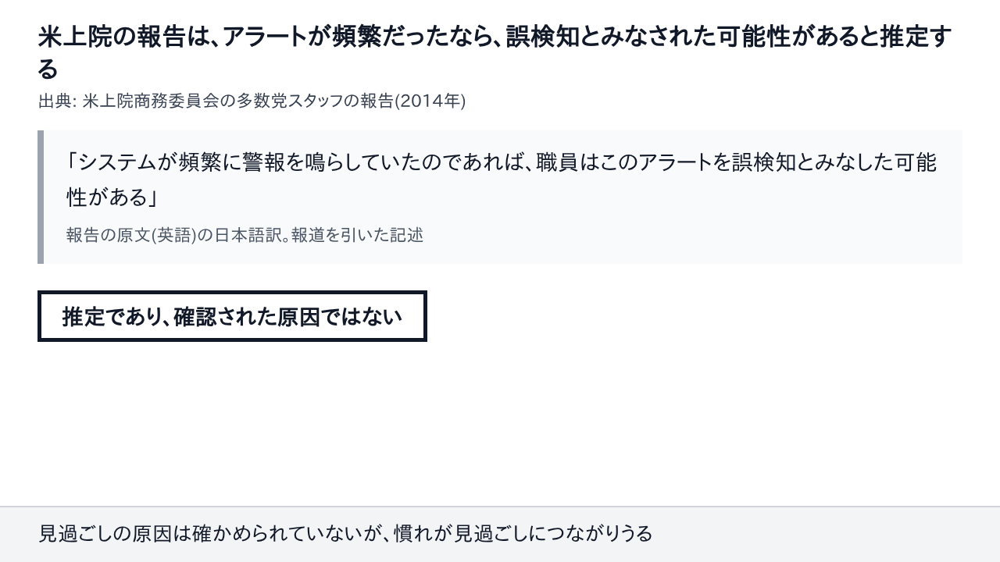
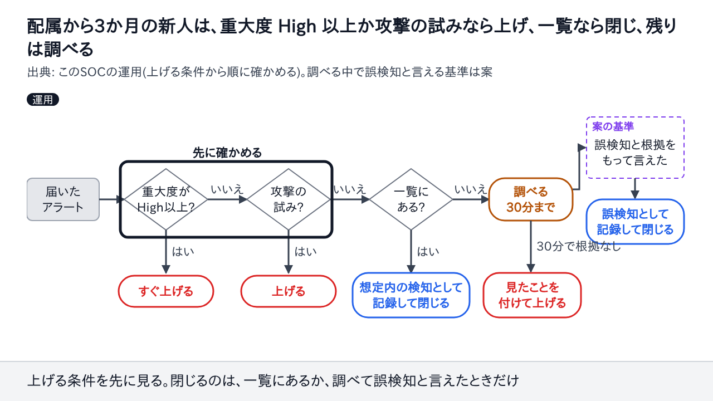

注目させる点: 分けてから決める、という2段の順

注目させる点: アラートは、ルールが探すものを見つけたときに出す知らせであること

注目させる点: EDRは端末の振る舞いを継続して集め、製品は脅威を検知するとアラートを作ること(2つをつなぐ経路は示さない)

注目させる点: アラートの活動を戦術に当てはめると、攻撃のどの段階かを言えること

注目させる点: 誤検知でも想定内でもない攻撃の試みの帯(27%以上)

注目させる点: 原因が検知の条件の側にあること

注目させる点: 調べ方と値が出典ごとに違うこと

注目させる点: 5項目そろえて渡すこと

注目させる点: これが推定であること

注目させる点: 上げる条件を先に確かめ、閉じるのは一覧にあるか、調べて誤検知と言えたときだけであること
